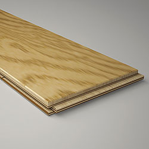

Укладка напольных покрытий
Напольные покрытия – ряд материалов, натурального и искусственного происхождения, предназначенных для отделки пола, обладающих повышенной износостойкостью и прочностью, в частности достаточно стойких к истиранию, устойчивых к ударам, а также обладающих рядом других специфических потребительских и эстетических качеств.
К напольным покрытиям относятся: паркет, напольная доска, ламинат, плитка (керамическая, натуральная, ПВХ) или другие, специально предназначенные для этих целей, материалы.
Специалисты Артели выполняют все виды работ с напольными покрытиями. Работы выполняются профильными специалистами, имеющими значительный опыт с материалами, перечисленными ниже и не только.
Обсудим детали?
Классификация напольных покрытий
Массивная доска
Массивная доска (шпунтованная доска пола). Массивная доска пола представляет собой высушенную шпунтованную доску из цельного массива. Чаще всего для ее изготовления используются широко распространенные хвойные породы – ель и сосна. Погонный метр из более прочных и редких видов древесины – лиственницы, дуба, ольхи – стоит гораздо дороже и чаще всего является заказной позицией. Чистая древесина – очень капризный материал, который требует большого опыта при укладке, поскольку незнание некоторых особенностей может проявиться уже сдачи работ. Доска быстро набирает влагу из воздуха, а при температурных перепадах сильно деформируется и может растрескаться. Средний ценовой диапазон массива составляет 2000-3000 руб. за м кв.
Инженерная доска

Инженерная доска (однополосная паркетная доска). Как правило, под этим термином понимается однополосная паркетная доска, состоящая из двух слоев. Классическая технология изготовления - многослойная влагостойкая фанера в виде основы и верхний слой из шпона дерева с фаской или замковым соединением по периметру. Основная особенность – толщина полезного слоя древесины, доходящая до 0,8 см., и широкий размерный ряд (длина до 3м). Фанерная подложка минимизирует возможность деформации и усыхания древесного слоя, обеспечивая долгий срок эксплуатации и стабильность покрытия, что особенно подходит для коттеджа. Ценовой диапазон начинается от 1350 руб./кв. м, зависит от вида древесины, использованной для декора и способа ее обработки.
Паркетная доска

Паркетная доска является разновидностью инженерной доски. По количеству плашек делится на одно-, двух- и трехполосную. Чаще всего состоит их трех слоев: подложки из хвойного шпона, середины из массива хвойных пород и декоративного верха из ламели дорогих сортов древесины. Многослойная структура обеспечивает долговечность и прочность покрытия, а замковое крепление – простоту и высокую скорость монтажа. В Москве паркетную доску можно купить от 1800 руб. за м2
Настил из паркетной и инженерной доски является оптимальным вариантом как по широкой гамме цветов и текстур, так и по простоте монтажа.
Штучный паркет
Классическое напольное покрытие, представляющее собой плашки из массива дерева, оснащенные шипами и пазами для плотной укладки. Самый распространенный вид – паркет из дуба и бука. Стоимость паркета в пределах Москвы составляет в среднем 2500 руб./м2.
Ламинат
Ламинат – конструкция, состоящая из четырех слоев. Основа ламината – древесноволокнистая плита высокой плотности (ДВП). Она придает устойчивость к давлению, нагрузкам и ударам. Плита покрыта декоративным пластиковым слоем, имитирующим штучный паркет, ценные породы дерева, керамическую плитку, мрамор и др. Верхний слой является защитным слоем. Он состоит из высокопрочной пленки. Защитный слой противостоит загрязнению, влаге, чистящим средствам. Нижний слой – стабилизирующий. Он препятствует проникновению влаги.
Панель ламината имеет размеры 40 – 140 см в длину, ширина составляет 8-70 см, толщина – от 6,2 до 12 мм. Доступность по цене, технологичность укладки, богатая цветовая гамма, разнообразие рисунка, износостойкость, простота в уходе — это те качества, благодаря которым ламинат считается самым востребованным видом напольного покрытия. Стоимость ламината колеблется от 250 до 2800 руб./м2
Плитка
Плитка – это красивый, прочный, гигиеничный, износостойкий, водостойкий и простой в уходе отделочный материал.
Глина, вода и огонь — вот три компонента, из которых изготавливается современная плитка, отсутствие химии и синтетики делают плитку самым гипоаллергенным и экологически безопасным отделочным материалом.
Уклада плитки должна производиться на ровное, твердое и сухое основание с соблюдением всех технологических норм. Зачастую, мелкие перепады уровня пола (до 1-2 мм на всю плоскость куда укладывается плитка) можно устранить за счет слоя плиточного клея. В случае больших перепадов рекомендуется выравнивающая стяжка основания или устройство выравнивающего наливного пола.
Для улучшения сцепления, основание, на которое планируется уложить плитку, необходимо пропитать грунтовкой глубокого проникновения. Перед укладкой производится разметка при помощи лазерного уровня. Укладывается плитка на плиточный клей. Расстояние между плитками выравнивается с помощью пластмассовых крестиков. Уровень пола постоянно контролируется лазером или специальным уровнем. После того как вся плитка выложена, ей необходимо дать сутки просохнуть, затем приступать к затирке швов. Затираются швы специальной затиркой при помощи резинового шпателя.
Укладка плитки требует существенных навыков, инструмента и опыта у специалиста. Поскольку укладка плитки является одним из самых сложных видов работ в чистовой отделке, именно по ней можно сделать вывод о том, насколько хорошо сделан ремонт в целом.
Наливные полы

Наливные полы — это специальное бесшовное полимерное покрытие, применяемое для устройства пола промышленного и гражданского назначения. В загородных домах применение наливных полов обычно ограничивается гаражом, но такой тип покрытия весьма эффективно подходит для тренажерных залов и СПА-зон.
Наливные полы на данный момент изготавливают по новым технологиям, используя акрил, полиэфирные и эпоксидные смолы и полиуретан. Данное средство для выравнивания пола образует гладкую поверхность, равномерно растекаясь по основанию. Готовое покрытие не имеет швов, а сама поверхность получается идеально ровным и горизонтальным.